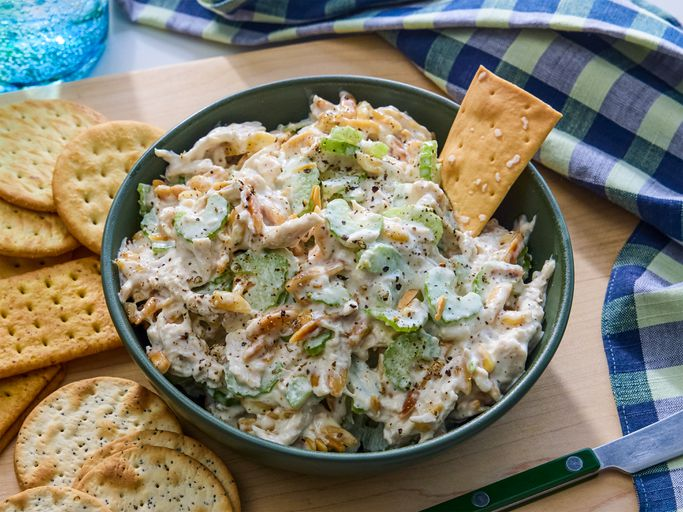

Chicken Salad

PHOTO: Picture of homemade chicken salad using the below recipe.
Description
Everyone needs this best chicken salad recipe in their collection! This creamy homemade chicken salad is quick and easy to
make with just a handful of everyday ingredients, is genius at using up leftovers, and perfect for warm weather picnics,
potlucks, lunches, or light dinners.
Ingredients
- Chicken: You'll need cooked chicken, chopped or shredded. If you have leftover roast chicken, grilled chicken, or
rotisserie chicken, chicken salad is a great way to use it all up. You can also use canned chicken to make chicken
salad (drain it first), or you can cook chicken for chicken salad. Use white or dark meat, or a combination of both
if you prefer.
- Mayonnaise: Creamy mayonnaise binds together all the separate ingredients for chicken salad into a satisfying mixture
of flavors and textures. Use your choice of regular or reduced fat mayonnaise. In this chicken salad recipe, the
mayonnaise is enhanced with a tablespoon of lemon juice for brightness and a ¼ teaspoon of ground black pepper. Taste
the dressing before mixing it with the chicken; you may find it needs a little salt or other flavor-booster from your
spice collection.
- Celery: Fresh, crisp celery adds both flavor and crunch. Be sure to chop the celery into small, uniform pieces so
it's easier to eat.
- Almonds: Here's the secret ingredient that makes this chicken salad recipe stand apart. Blanched slivered almonds
(available at any grocery store) are quickly pan-toasted to bring out their nutty flavor, and then added to the
chicken salad mixture.
How to Make Lasagna Step-By-Step
This homemade chicken salad recipe uses six simple ingredients and takes only 10 minutes to make from start to finish.
After that, you can serve it up on salad greens, scoop it into pita bread or half an avocado, roll it up in a tortilla
for a wrap, or serve it hot in a quesadilla or chicken melt.